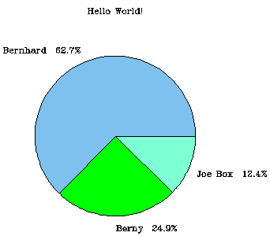
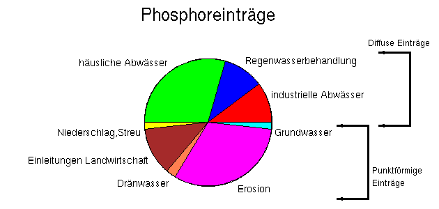

Piecharts with (GNU)plotutils
An experimental C-program, which can create piecharts in
various outputformats
using GNU plotutils.
E.g, you can postprocess the results with xfig, idraw,
Skencil
or any other vector-drawing program that understands
one of the output formats.
It is rudimentary and
an example for programming the
libplot library. It can be useful, though.
Piecharts are usually a bad idea
In most cases they are not a good way to represent quantitative information.
A
Warning is printed by
piechart since v0.10 for this reason.
Usage
An inputfile (named probe1.dat) like:
# a comment, followed by an empty line
Bernhard 50.5
Berny 20.02
Joe Box 10
will result into an output like this:
|

|
Used command: piechart -T png -r0.5 -d0.05 -C skyblue2,green,aquamarine
-t 'Hello World!' -fr <probe1.dat >probe1.png
and then cropped the image.
Plotutils' libplot supports different outputformats in addition to X11 onscreen,
e.g.: plot(meta), eps, hpgl, tek, ai, png, regis, svg, pnm,
(uncompressed)gif and fig.
A screenshot of an X11 output.
About plotutils
The plotutils package
is GNU software and can be obtained from any GNU ftp site mirror.
Links
download
Get the source -- compile the program. Unless you can find a
precompiled version for your system, of course. Check the link section.
You need to have the libplot library from the plotutils package
installed.
Get one of the stable versions below or look in the
development directory
for contributions. There is also a
piechart CVS repository
v0.13
New features: "-B" setting the size of the output bitmap;
"-n" for specifying the fontsize. (Contributions of Alexander Pohoyda).
Bugfix: Compiles with gcc 3.3.x again.
Tested with plotutils-2.4.1.
Check piechart -h for usage.
v0.12
Bugfix release: Does not seqfault when using "-f". (Reported by Franck Aniere)
Tested with plotutils-2.4.1.
v0.12
v0.11
Bugfix release: Does not seqfault when displaying without percentages.
(Thanks for Satish Alreja for reporting.)
Added more available terminal options to the usage message.
Tested with plotutils-2.4.1.
Check piechart -h for usage.
v0.11
v0.10
Issues a general warning now. Can display the percentage values now through
new option "-f". New option "-p" pulls a slice out of the pie.
Check piechart -h for usage.
v0.10
v0.9
Ready for plotutils-2.2 tested with plotutils-2.3.
Minor improvements over v0.8:
v0.9
See older versions for use with plotutils-2.0 or 2.1.x.
v0.8
A bugfix-release:
Label length is dynamic now.
Piechart terminates strings after
strncpy(), Bug reported by Martin J. Evans fixed.
v0.8
v0.7
Improvements: Added some options and structured the code a little bit.
v0.7
piechart -h gives:
piechart version 0.7 (RCS-$Revision: 1.9 $)
Copyright (C) 1998 by Bernhard Reiter.
The GNU GENERAL PUBLIC LICENSE applies. Absolutly No Warranty!
compiled with option: DEBUG
usage: /home/gis/breiter/hacking/piecharts/piechart [options]
the stdin is read once.
options are:
-t Title set "Title" as piechart title
-T Display-Type one of X, ps, fig, hpgl, tek, or meta
(meta is the default)
-r radius float out of [0.1;1.2] default:0.8
-d textdistance float out of [-radius;1.2] default:0.0
-C colornames comma separated list of colornames
(see valid names in color.txt of plotutils doc.)
-h print this help and exit
-V print version and exit
v0.6a
Adapted for plotutils-2.0. (Also tested with plotutils-2.1 .):
v0.6a
v0.5a
For plotutils-1.3, you will need: v0.5a
Intended Use
Though being an example program, this piechart creation mechanism might
be useful. If you have some script processing, e.g. you are like me and do
most of your scientific calculations with AWK, the results need to be
visualised. You also need some graphics for illustration of numbers to
be published. Most data can be plotted and printed with gnuplot
(a 99% free program), but you have a problem
with displaying parts of an entity, like mass balances. This piechart program
can be used to produce a raw picture. Postprocess the fig format output
with xfig and you can get a nice eps file for inclusion into your documents.
See this complicated example
which shows Phosphor entries in flowing waters. Estimated for Germany 1995
by the Umweltbundesamt (click for .eps file):

(I only added the two brackets on the right and zoomed the headline a
bit with xfig.)
The task of displaying charts and producing a nice vector format
is a common "nice-to-have-feature" for all spreadsheets. It could be separated.
Expanding the idea of my little piechart program would produce a
useful extension to other free software.
The Future?
There are no plans to further improve piechart.c. It will be kept available
with an occasional update if bugs or patches trigger one.
Bernhard will hand over maintenance to someone that demonstrates
the necessary skills and interest to do so.
The development of the plotutils package has gone dormant since 2000.
Time will tell if it will get picked up again.
When writing piechart.c I originally though that:
"
Someone should come up
with an textformat describing piecharts, which spreadsheets could export.
"
Since then I have realised that using piecharts can only be used to hide data,
but I still believe that seperateing tasks between loosely couple components
is a good idea. The creation of charts in general could be an example for this.
|
«Bernhard`s Homepage
|
Internal
|
last modified: September 2004
E-Mail: Bernhard.Reiter@usf.Uni-Osnabrueck.DE
|
|
[
Bernhards Heimatseite(»German)
]
[
plotutils - GNU Project - FSF
]
[
plot_wrap- A SWIG wrapping of libplot
]
[
XFIG, FIG and associated software
]
[
program ascii_chart
]
|
{kind=link}